Proyecto para el curso de Procesos Estocásticos de la Licenciatura en Estadística
Modelo y Objetivos
El modelo de Schelling fue originalmente propuesto para estudiar como decisiones locales basadas en preferencias individuales pueden generar patrones de segregación a gran escala dentro de un sistema social. Esta lógica de interacción espacial y ajuste iterativo presenta una conexión natural con las cadenas de Markov, ya que la evolución del sistema puede formalizarse como un proceso estocástico con transiciones entre estados y posibles configuraciones absorbentes.
En este trabajo, reinterpretamos el modelo desde una perspectiva de negocio en mercados financieros y ecosistemas fintech. Consideramos una grilla de 20×20 (400 celdas), donde cada celda representa un producto financiero, plataforma de inversión o nicho de mercado, y puede estar ocupada por un cliente del segmento Tradicional (rojo), Fintech/Neobank (azul), o encontrarse vacante lo que representa espacios de mercado disponibles para adopción o migración de clientes.
Cada agente representa un cliente o inversor que toma decisiones de localización influenciado por efectos de red y afinidad de segmento. Los “vecinos” de una celda se interpretan como clientes con perfiles similares dentro del mismo ecosistema de producto, que generan referencias, confianza, engagement y externalidades positivas propias de los mercados con efectos de red.
Cada cliente posee un parámetro de tolerancia τ, que representa el mínimo de masa crítica de clientes similares requerida para permanecer en un producto sin abandonarlo (churn threshold). Un agente está “satisfecho” si en su celda actual se cumple que el número de vecinos del mismo segmento es mayor o igual a τ. En caso contrario, el cliente se considera “insatisfecho” y se convierte en candidato a migrar hacia otro producto donde su perfil esté mejor representado, dejando vacante su celda anterior.
La dinámica del modelo consiste en identificar agentes insatisfechos y permitirles migrar hacia celdas vacantes donde puedan maximizar su afinidad de segmento, siempre que el nuevo espacio supere el umbral τ. Este proceso se repite hasta alcanzar un equilibrio donde ya no se observan migraciones adicionales y el sistema converge a una configuración estable de mercado.
Los objetivos del trabajo son:
(1) estudiar cómo surgen patrones de segmentación y concentración de clientes en productos financieros a partir de decisiones locales.
(2) analizar la relación entre τ y el grado de especialización de nicho de mercado.
(3) formalizar la evolución del ecosistema como una cadena de Markov, caracterizando estados absorbentes como configuraciones de mercado estables donde no existe switching adicional de clientes.
Las preguntas centrales que buscamos responder son cómo influye el umbral de tolerancia τ en la concentración de segmentos por producto, en qué medida determina la existencia y probabilidad de alcanzar un equilibrio absorbente de mercado, y cuántos pasos requiere el sistema —en promedio— para converger a un estado de retención estable. Asimismo, analizamos el proceso de migración para construir y estudiar la matriz de switching entre segmentos, un indicador clave en modelos de adopción competitiva de productos financieros.
Resultados Teóricos
Grilla NxN = 20x20. 400 celdas en total. Podemos definir el siguiente conjunto finito de todas las celdas posibles a través del producto cartesiano \( Λ = {1, ..., 20} × {1, ..., 20} \)
Luego podemos considerar el conjunto finito de colores posibles, donde cada celda puede ser \( 𝑋 = {𝑅, 𝐴, 𝑉 } \) (Rojo, Azul, Vacante)
Podemos ver el Espacio de Estados como una función que asigna a cada celda posible un color:
\( 𝑆 = 𝑋^Λ = {𝑠 ∶ Λ → 𝑋}. Donde 𝑠(𝑖, 𝑗) ∈ 𝑋 ∀ (𝑖, 𝑗) ∈ Λ \)
Podemos definir también: \( 𝑆 = {𝑠 ∈ 𝑋^Λ ∶ #𝑅 = 180, #𝐴 = 180, #𝑉 = 40} \)
En cuanto a la cardinalidad del este Espacio de Estados, tenemos que \( 3^{(20𝑥20)} \) combinaciones posibles de grillas de 20x20 que tienen 3 colores. Es decir \( #𝑆 = 3^{(20𝑥20)} = 3^{400} \)
El espacio de estados tiene estados posibles que son configuraciones de toda la grilla. Cada configuración que puede tomar la grilla es un estado del espacio de estados.
Luego tenemos 100% = 400 es el total de celdas en la grilla, por lo que usando regla de tres, el 10% = 40 son celdas vacantes. Luego tenemos 400-40=360 celdas disponibles para celdas rojas y azules, sabemos que la proporción debe ser 50/50 por lo que tenemos 180 celdas rojas y 180 celdas azules. El espacio de estados se reduce a las grillas que cumplan esta condición, pero de todas formas sigue siendo un espacio de estados muy grande.
Para contar el número de vecinos de igual color que la celda central (i,j) definimos la siguiente función que va del conjunto de celdas a los reales entre \( [0, 1], 𝑆 ∶ 𝑆𝑋𝑁^2 → [0, 1] \) Esta función será nuestra regla de decisión para decidir si un agente esta o no insatisfecho.
Entonces: \tau = 𝑥% indica que tenemos que tener al menos x% (100*x%) agentes similares de vecinos para estar satisfechos como agente principal. \( 𝑆(𝐻t, 𝑖, 𝑗) \leq \tau \) tenemos que el agente esta insatisfecho. \( 0 ≤ 𝑆(𝐻𝑡, 𝑖, 𝑗) ≤ 1 \ y \ 0 ≤ 𝜏 ≤ 1 \)
Entonces notemos que los vecinos se pueden definir de la siguiente forma:
| (i-1, j-1) | (i-1, j) | (i-1, j+1) |
| (i, j-1) | (i, j) | (i, j+1) |
| (i+1, j-1) | (i+1, j) | (i+1, j+1) |
Definimos las siguientes funciones indicadoras que servirán para contar el número de vecinos del mismo color y la proporción de estos

Indicatrices
Ahora definimos los siguientes conjuntos de índices:
F = {i-1, i, i+1}
C = {j-1, j, j+1}
Definimos la siguiente expresión para contar el número de vecinos de igual color
\( \left( \sum_{c \in C} \sum_{f \in F} R_k \right) - 1 \)
Ponemos él -1 porque en la doble sumatoria estamos contando también a la celda central, la (i,j).
Definimos la siguiente expresión para contar la proporción de vecinos de igual color
\( \frac{ \left( \sum_{c \in C} \sum_{f \in F} R_k \right) - 1 }{ \left( \sum_{c \in C} \sum_{f \in F} R_k \right) - 1 + \left( \sum_{c \in C} \sum_{f \in F} A_k \right) - 1 + \left( \sum_{c \in C} \sum_{f \in F} V_k \right) - 1} = \frac{ \left( \sum_{c \in C} \sum_{f \in F} R_k \right) - 1 }{\left( \sum_{c \in C} \sum_{f \in F} R_k \right) + \left( \sum_{c \in C} \sum_{f \in F} A_k \right) + \left( \sum_{c \in C} \sum_{f \in F} V_k \right) - 3} \)
Ponemos él -3 (o 3 veces el -1) para no considerar la celda centra (i,j)
Entonces la regla de decisión es que si \( 𝑆 < \tau \), entonces el agente esta insatisfecho (el número de vecinos de igual color es menor que el número de vecinos mínimos de igual color que toleraríamos para estar satisfechos), por lo que el agente debe moverse.
En cuanto a las transiciones de la cadena \( 𝐻_𝑡 → 𝐻_{𝑡+1} \), pasar de una configuración de la grilla a otra configuración de la grilla es que haya al menos un agente insatisfecho, el cual será seleccionado de forma aleatoria y se moverá a la celda que maximice el número de vecinos del mismo color, notar que bajo esta lógica, el agente puede moverse a esta celda maximizadora, pero no estar satisfecho, lo ideal es que el agente quede satisfecho al moverse, pero no siempre será posible.
Recordando que las notaciones que estamos usando para la celda donde se encuentra al agente: \( 𝑘 = (𝑖, 𝑗) \) y las celdas que no son donde se encuentra el agente \( 𝑘′ ≠ 𝑘 => (𝑖′, 𝑗′) ≠ (𝑖, 𝑗) \)
Podemos definir el conjunto \( U_t = {k' \in U_t / k -> k' } \) como el conjunto de celdas vacantes a las que se puede mover un agente insatisfecho que se encuentra en la celda k en el momento t de la grilla. Luego el conjunto \( V_t = {k' \in V_t / S_{k'} \geq S_k } \). Es el conjunto de celdas que maximizan el número de vecinos del mismo color del agente con respecto a la celda en la que se encuentra en el momento t. Buscaremos movernos a \( max(S_{k'}) \), la celda \( k' \) que maximiza el número de vecinos del mismo color, y por lo tanto se cumple que \( max(S_{k'}) > S_k \). Notar que bajo esta definición se cumple que \( V_t \subset U_t \).
Pero debemos tener en cuenta que puede ocurrir tres casos para el agente en la posición k:
1) Que de \( 𝑈_𝑡 \) exista al menos un elemento en \( 𝑉_𝑡 \), del cual buscaremos el máximo de \( 𝑉_𝑡 \) y el agente se moverá para maximizar su número de vecinos de igual color.
2) Que de \( 𝑈_𝑡 \) exista al menos un elemento en \( 𝑉_𝑡 \), pero se cumple que estos elementos dan una número de agentes de igual color que es igual o menor con respecto a la posición actual en la que se encuentra el agente, en este caso el agente también se mueve a cualquiera de las celdas que dan un número de agentes del mismo color equivalente a la cantidad que tiene con respecto a la celda en la que esta y ignora las que dan un número menor de agentes de igual color.
3) Que de \( 𝑈_𝑡 \) no exista al menos un elemento en \( 𝑉_𝑡 \), es decir todas las celdas a las que se pueden mover el agente dan un número de vecinos de igual color menor con respecto a la que se encuentra actualmente, en este caso el agente no se mueve y se queda en la posición en la que esta.
Este último caso es importante porque dado que la celda actual es la que maximiza el número de agentes de igual color (aunque esto no implica necesariamente que el agente este satisfecho), y no hay otra celda que lo haga, si esto ocurre para todos los agentes insatisfechos de la grilla entonces décimos que la cadena entro en un estado absorbente y la grilla se quedara con esa configuración por un tiempo infinito
Si todos los agentes maximizan el número de vecinos del mismo color en la celda en la que están, entonces ya no hay más movimientos y la grilla queda segregada, quedando en este estado por siempre, por lo que tenemos un estado absorbente. Notar que no necesariamente los agentes que están maximizando el número de vecinos de igual color, están satisfechos, eso dependerá del nivel de tolerancia \( \tau \) definido.
Si lo queremos formalizar decimos que una configuración de la grilla 𝑖 es absorbente si solo si, no existe ningún movimiento que suba la satisfacción de cualquier agente
\( p_{ii} = 1 \iff \forall \ k' \in H_t, S_{k'} \leq S_k, \ k \neq k' \)
siendo k la celda actual en la que se encuentra el agente en el momento t de la grilla.
Notar que los estados absorbentes a los que puede entrar la grilla son varios, definidos según el número de agentes que maximizan su número de vecinos del mismo color, pero se diferencian en que algunos pueden estar satisfechos y otros no, puede ocurrir que todos los agentes en el momento t de la grilla estén satisfechos al maximizar su número de vecinos adyacentes \( argmax(S(i,j)) = (i', j') \) y \( S(i', j') \geq \tau \), que algunos estén satisfechos y otros no, o que todos estén insatisfechos \( argmax(S(i,j)) = (i', j') \) y \( S(i', j') < \tau \), todo esto dependerá del nivel de tolerancia \( \tau \).
Diseño de Simulación
Pseudocódigo usando el paquete algorithm.
El criterio de parada es que todos los agentes estén maximizando el número de vecinos de igual color en la posición en la que están. Si 𝑈𝑡 = ∅, en la simulación es que la lista donde almacenamos los estados movibles sea vacía. El criterio de parada depende de cierta manera del parámetro de tolerancia porque para valores más bajos de tolerancia, para estar satisfechos aceptamos pocos vecinos del mismo color y esto repercute en que el número de transiciones a estados maximizadores sea menor, porque habrá muchos agentes satisfechos, lo que causa que la cadena llegue más rápido al criterio de parada. En el otro caso, si el parámetro de tolerancia es más alto, exigimos muchos vecinos del mismo color para estar satisfechos, entonces el número de transiciones a estados maximizadores será mayor, porque habrá más agentes insatisfechos que se moverán, lo que causa que la cadena llegue más lento al criterio de parada.
El primer bloque de código arma un “juego de barrios” en una cuadrícula: primero crea una grilla de 20x20 donde cada casita puede estar ocupada por un vecino rojo, un vecino azul o quedar vacía. Luego, para cada vecino, mira solo el mini-barrio 3x3 que lo rodea y calcula qué proporción de sus vecinos son de su mismo color; si esa proporción es menor que un nivel de tolerancia (tau), el vecino se considera insatisfecho. Los insatisfechos miran todas las casas vacías y “simulan” mudarse a cada una para ver en cuál tendrían más vecinos de su mismo tipo, y eligen al azar una de esas posiciones óptimas (que puede dejarlos satisfechos o no). El código va repitiendo este proceso paso a paso, moviendo de a un vecino insatisfecho por vez, y guardando fotos intermedias de cómo queda el mapa. Después corre la simulación para distintos valores de tau y genera un gráfico tipo mosaico donde se ve, para cada tau y para distintos pasos de tiempo, cómo los barrios se van reordenando y qué tan mezclados o segregados quedan los rojos y los azules.
Utilizamos las funciones ya definidas para empezar a hacer los plots, donde en las ejecuciones para distintos valores de tau (nivel de tolerancia) obtuvimos los siguientes gráficos:
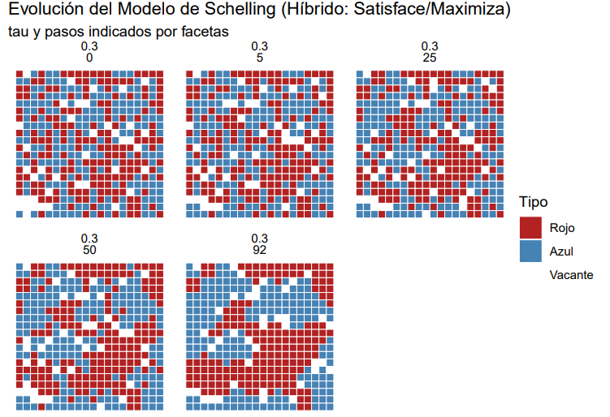
Cuasi-absorción (Híbrido, tau=0.300) alcanzada en el paso 92
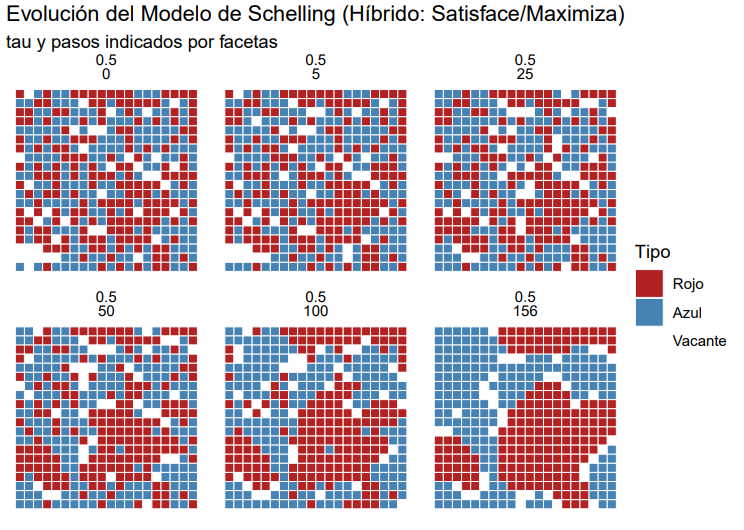
Cuasi-absorción (Híbrido, tau=0.500) alcanzada en el paso 156
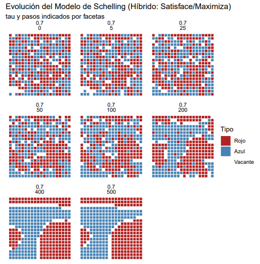
NO se alcanzó la cuasi-absorción (Híbrido, tau=0.700) tras 500 pasos (max_iter).
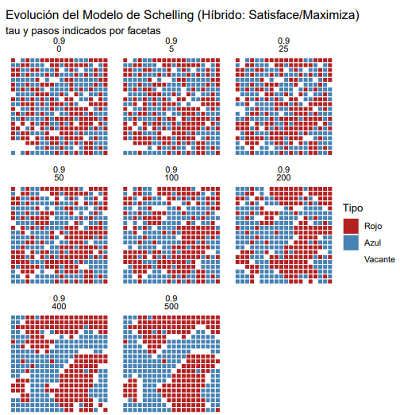
NO se alcanzó la cuasi-absorción (Híbrido, tau=0.900) tras 500 pasos (max_iter).
Experimentos
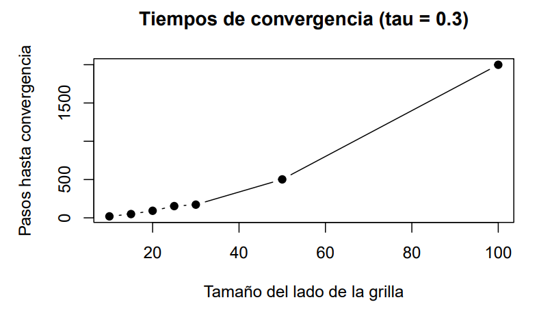
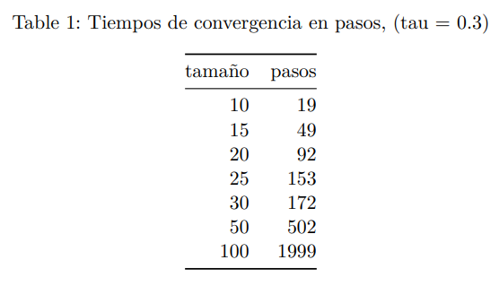
En estos experimentos lo que buscábamos era ver como se comportaba el tiempo de convergencia en pasos a medida que cambiábamos el tamaño de la grilla para diferentes \( \tau \) (intolerancia social), vemos que para \( \tau = 0.3\) la convergencia en pasos parece crecer de manera lineal a medida que aumentamos el tamaño de grilla, esto quiere decir que con un nivel de tolerancia bajo, el aumento del tamaño de la grilla pareciera producir un aumento lineal en la cantidad de pasos de convergencia, cabe aclarar que para estos experimentos usamos una cantidad de pasos máxima de 3000. Para este \( \tau \) no logra alcanzar el máximo de pasos, la grilla de 100x100 logra la convergencia en el paso número 1999
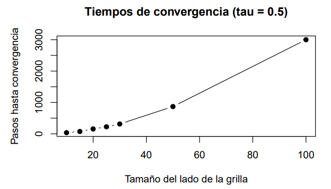
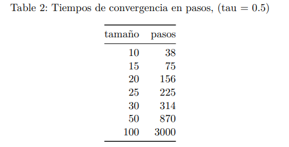
Para \( \tau = 0.5 \) vemos que se sigue comportando de una manera bastante lineal a medida que aumentamos el tamaño de la grilla, pero en este caso con una grilla de 100x100 no logra converger y alcanza el número máximo de iteraciones, esto nos hace pensar que a medida que el nivel de intolerancia es mayor los agentes tienden a no maximizar su satisfacción de una manera tan rápida como vimos para el 𝜏 = 0.3 en el que para un tamaño de grilla de 100x100 logró la convergencia
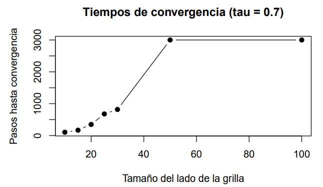
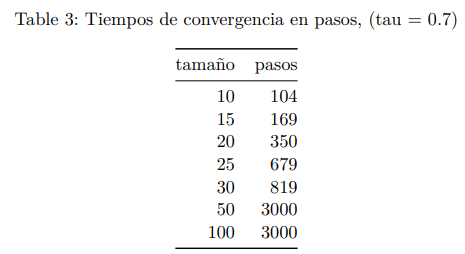
Para \( \tau = 0.7 \) vemos que no se comporta de una forma tan lineal, sino que más exponencial, para un tamaño de grilla de 50x50 ya logra alcanzar el número máximo de iteraciones, esto quiere decir que la tolerancia tiene un papel clave a la hora poder maximizar su satisfacción.
Ahora vamos a generar un resumen usando algunos valores representativos de tau (0.2, 0.4, 0.6 y 0.8) para ver cómo cambian las principales métricas del modelo. Para cada tau corremos varias simulaciones con distintas semillas y nos quedamos con los valores importantes: cuántos pasos tarda en estabilizarse el sistema, qué proporción de agentes queda insatisfecha, qué tan segregado queda el mapa (Moran) y qué tan grandes son los grupos de un mismo color. Después promediamos todo, calculamos la variabilidad y guardamos los resultados para no repetir cálculos. Para ilustrar, armamos gráficos que muestran cómo cada métrica cambia según la tolerancia, para ver de un vistazo cómo afecta al comportamiento del modelo
Análisis paramétrico RÁPIDO: 5 corridas por tau, 400 iter máx., 4 valores de tau.
Resultados del análisis paramétrico (Promedio por tau):
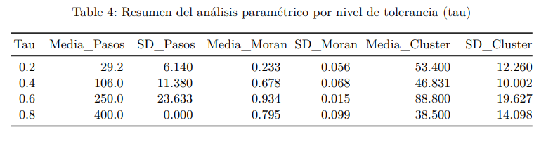
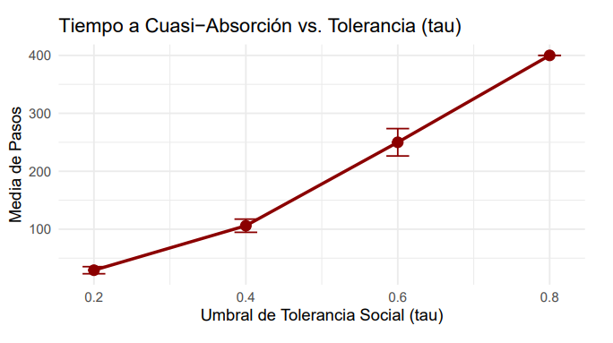
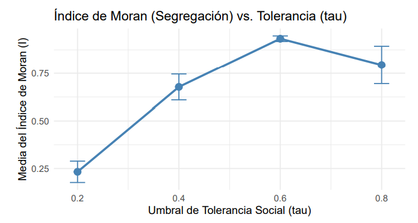
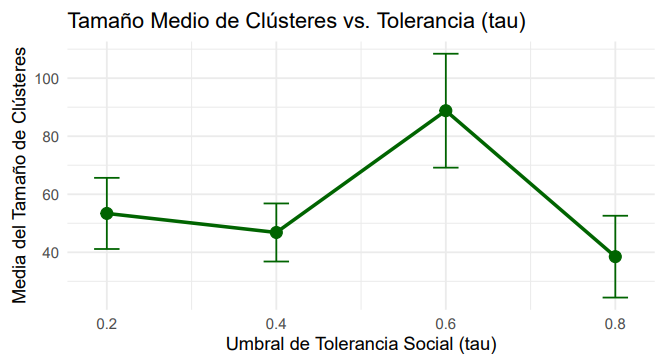
Al observar cómo cambia el comportamiento del modelo de Schelling a medida que aumentamos la intolerancia social \( (\tau) \), aparece un patrón muy claro: cuanto mayor es \( \tau \) más tiempo tarda el sistema en estabilizarse y más segregado termina quedando el mapa. Con \( \tau = 0.2 \), los agentes son bastante tolerantes, así que el sistema llega rápido al equilibrio \( (\sim \ 29 \ pasos) \), y apenas se forman agrupamientos fuertes; esto se ve en el índice de Moran bajo (0.23) y en un tamaño de clúster moderado. A medida que subimos a \( \tau = 0.4 \) ya se nota un salto, los agentes se vuelven más exigentes, tardan más en acomodarse (106 pasos) y la segregación espacial aumenta de forma notable. El comportamiento más extremo se ve en \( \tau = 0.6 \) y \( \tau = 0.8 \). Con \( \tau = 0.6 \), la segregación crece mucho (Moran \( \sim 0.93 \) ). los clústeres se vuelven mucho más grandes y el sistema necesita muchos más pasos para acercarse al equilibrio. Finalmente, en \( \tau = 0.8 \) la tolerancia es tan baja que prácticamente todos los agentes se sienten insatisfechos; como consecuencia, el sistema no llega a absorberse dentro del límite de iteraciones (400 pasos), pero aun así produce una segregación muy marcada (Moran \( \sim 0.79 \) ).
• Tolerancia baja (0.2): todos conviven más o menos mezclados.
• Tolerancia media (0.4): se empiezan a separar.
• Tolerancia un poco alta (0.6): se forman barrios enormes y bien definidos.
• Tolerancia extrema (0.8): quieren tanto orden que terminan generando más desorden:
Resultados y Análisis
Luego de observar los gráficos y ver como afecta el nivel de tolerancia \( (\tau) \) a distintas métricas como el tamaño medio de clusters, el índice de Moran, y el tiempo a cuasi-absorción, concluimos que:
El Tamaño Medio de Clústeres es una métrica que indica el tamaño promedio de los clusters formados, un cluster es un grupo de agentes del mismo color. Para calcularlos identificamos cada grupo de vecinos similares calculamos el promedio de sus tamaños. Lo aplicamos a la grilla final de la simulación. En la gráfica que obtuvimos vimos que al subir el umbral de tolerancia ( \( \tau \) ) el tamaño medio de los clusters va aumentando, aunque este valor fluctúa para valores de tolerancia mayores que 0.7. Esto tiene sentido porque para valores bajos de tolerancia, vimos que el gráfico tendía a segregar menos, por eso el tamaño promedio de clusters es menor, en cambio, para valores altos de tolerancia, el cluster tendría a hacer una segregación casi perfecta, por eso el tamaño medio de clusters es mayor.
El Índice de Moran mide la autocorrelación espacial, la tendencia de los valores de atributos a estar correlacionados con valores vecinos. Es una medida formal de segregación, cuantifica el grado de agrupamiento de los agentes del mismo tipo. Es un valor entre -1 y 1 que se aplica a la grilla final. En el gráfico que hicimos vimos que para niveles bajos de tolerancia, este índica tiene valores bajos, esto tiene sentido, ya que la segregación es menor y tenemos menos agrupamiento de vecinos similares. En cambio, para niveles altos de tolerancia, tenemos clusters con la mayoría todos sus vecinos iguales, por lo que este índice es mayor.
El tiempo de Cuasi-Absorción mide el tiempo que se demora en llegar a un estado absorbente. Vemos que cuando aumentamos el valor de tolerancia el tiempo de cuasi-absorción aumenta, esto se debe a que para niveles bajos de tolerancia la mayoría de agentes estarán satisfechos y habrá pocos desplazamientos, por lo que llegaremos rápido al estado absorbente. En cambio, para niveles altos de tolerancia, la mayoría de agentes estarán insatisfechos y habrá más desplazamientos, por lo que llegaremos más lento al estado absorbente.
Conclusiones
Concluimos que logramos exitosamente formalizar el modelo de Schelling como una Cadena de Markov, definimos el espacio de estados, la regla de transición y la probabilidad de esas transiciones.
Realizamos una simulación con código en la cual obtuvimos el comportamiento de la grilla para distintos valores de tolerancia \( \tau \), además de distintas métricas donde vimos la relación de este nivel de tolerancia con distintos elementos como el tamaño medio de clusters, el índice de Moran, y el tiempo a cuasi-absorción.